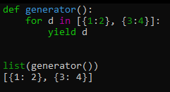

ביצעתי list comprehension על חזרה מגנרטור (שמות לא אמיתיים):
[x for x in generator()]
הבודק האוטומטי כתב לי ש:
הבודק האוטומטי: אין צורך להשתמש פה ב־list comprehension, עדיף להשתמש פשוט ב־ list()
ניסיתי לעשות:
list([x for x in generator()])
list(x for x in generator())
list(for x in generator())
list(generator())
אף אחד מהם לא עבד. פיספסתי משהו?
aviadamar
הגנרייטור שלך אולי עושה פעולה שניתנת לעשות באמצעות list() ואין צורך בו ?
(אין לי בגדול מושג על איזה תרגיל אתה מדבר אז אני רק יכול לנחש)
Yam
הוא צודק,
ניתן להמיר כל iterable ל־list עם הפונקציה list – הרבה יותר קצר ומובן. אין סיבה להשתמש בכוח ב־comprehensions.
gonny
אני לא מאמין שזה המקרה. הפונקציה של הגנרטור מייצרת לי מילון עם מידע בפנים. ליסט לא יעבוד שם. אין לי בעיה להחזיר את הקוד שלי למצב לפני השינוי (שעליו הבודק לא העיר) אבל אז זה for עם פעולה אחת של append בפנים. חשבתי שלזה נועד הקומפרהנשן.
ido
אם הבנתי נכון ואתה מנסה לחלץ רק את המפתחות של המילון - list יעשה את העבודה
gonny
לא. מייצר רשימה של מילונים שבה אני עושה שימוש בהמשך בערכים של המילונים.
ido
זה המצב?

gonny
אצלי הyield הוא:
yield {a: a, b:b, c: c}
כל פעם נוצר מילון חדש. לא כמה מילונים ביחד
ido
עובד לי גם במצב כזה…
gonny
כן מוזר. בדקתי את זה מקודם וזה לא עבד. כנראה עשיתי עוד משהו שוטתי בין לבין. תודה בכל זאת לכולכם.